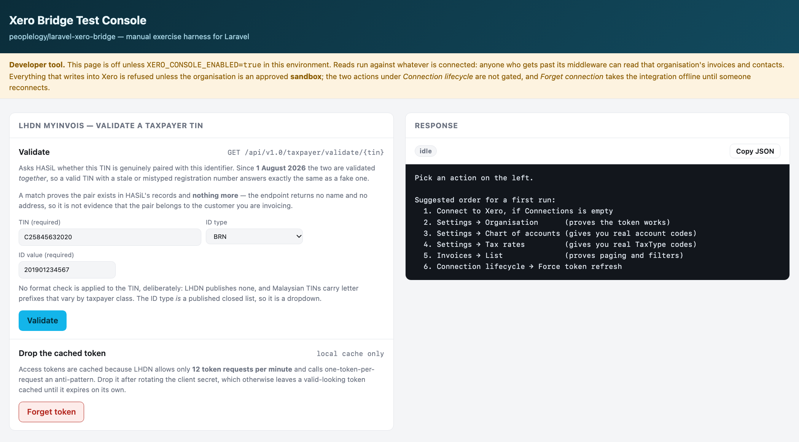
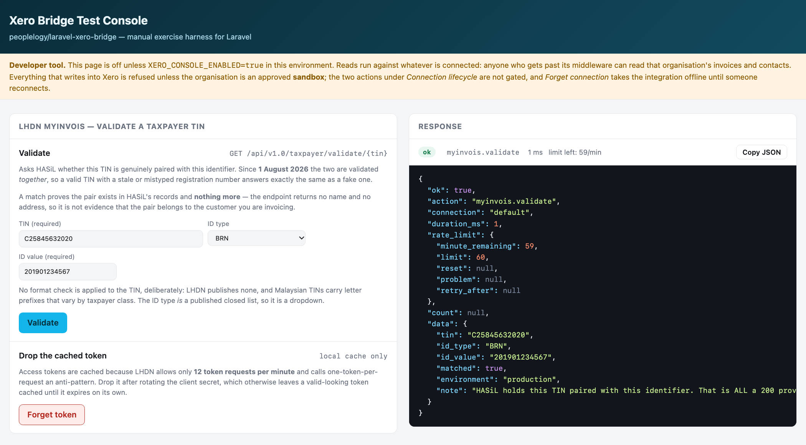
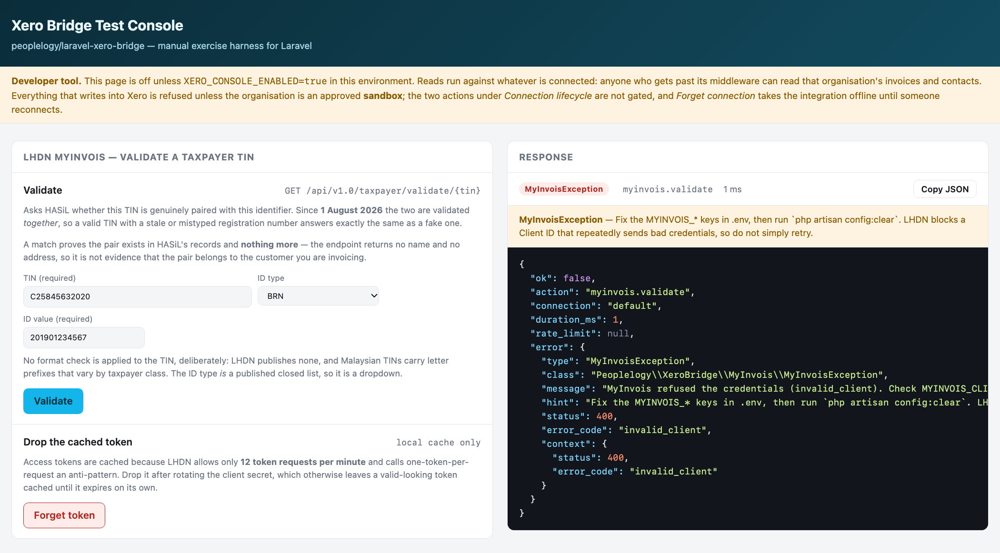

This manual is for the people who check customers' tax details — finance, admin and sales-support staff. It needs no programming knowledge.
It shows how to ask LHDN (HASiL) whether a customer's TIN (Tax Identification Number) is genuine and belongs together with their business registration number (or, for a person, their IC or passport number), using the Xero Bridge Test Console page that comes with your application.
What it does not do: it does not send invoices to LHDN or to Xero, and it changes nothing about the customer. It only asks one question and shows LHDN's answer.
Version note. Written against
peoplelogy/laravel-xero-bridgev1.7.2. The screens shown are the package's own console; your application may show it under its own address. The TIN and registration number in the pictures are LHDN's published example, not a real taxpayer.
The page is switched off until your administrator turns it on, and it is normally limited to admin users. Ask your administrator for:
/xero/console, for
example https://your-app.example.com/xero/console;If the address shows "404 Not Found", the page is not switched on in that system. If it sends you to a sign-in page or says "Forbidden", your account is not allowed to use it. Either way, ask your administrator.
| Detail | For a company | For a person |
|---|---|---|
| TIN | The company's tax number — usually starts with C, e.g. C25845632020 |
The person's tax number — usually starts with IG |
| ID type | BRN | NRIC (Malaysian IC), PASSPORT, or ARMY |
| ID value | The 12-digit business registration number from the SSM certificate, e.g. 201901234567 |
The IC number (12 digits), the passport number, or the army number |
Type the numbers without spaces or dashes. For a company, always use the new 12-digit SSM number: an old short-format registration number will not match, even with a correct TIN.
Open the address your administrator gave you and sign in if asked. The page is called Xero Bridge Test Console. Scroll down the left column to the panel headed LHDN MyInvois — validate a taxpayer TIN.
The yellow "Developer tool" strip at the top is a reminder that this page is a tool for admins; it is safe to use for TIN checks.

In the Validate section of the panel:
The light grey numbers you see in empty boxes (C25845632020, 201901234567) are only examples
of the format. They disappear when you type. If you leave a box showing grey text, nothing has been
entered.
Both numbers are needed. LHDN checks the TIN and the ID number as a pair: a genuine TIN typed with the wrong registration number gets the same answer as a made-up one.
Click the blue Validate button. The answer appears within a few seconds in the Response panel on the right.
At the top of the Response panel is a coloured label:
ok means LHDN answered — read "matched" in the box underneath for the answer;"matched": true
What it means: LHDN holds this TIN together with this registration (or IC/passport) number. The details are genuine and belong together.
What to do: you can use these details on the customer's record and invoices.
One caution: a match does not tell you whose numbers they are — LHDN returns no name or address. If you have any doubt that the numbers belong to this customer, compare them with the customer's own SSM certificate or e-invoice details.
"matched": falseWhat it means: LHDN answered normally, but it does not hold this TIN together with this ID number. The label is still green because this is an answer, not a fault.
What to do:
A red label at the top of the Response panel, with a yellow note underneath, means LHDN could not give an answer. Nothing is wrong with the customer's details — the problem is with the connection to LHDN. The yellow note says what to do.

| What the response says | What it means | What to do |
|---|---|---|
| "refused the credentials (invalid_client)" | The application's LHDN login details are wrong, or belong to LHDN's test system instead of the live one (or the other way round) | Stop and tell your administrator. Do not keep clicking Validate — LHDN can block the account after repeated refusals |
| "MyInvois is disabled" or "is missing" / "placeholder" | The LHDN connection is switched off or not set up in this system | Tell your administrator |
| Status 429 or "rate-limiting" | Too many checks in the last minute (the limit is 60 per minute for the whole application) | Wait a minute, then try once more |
| Status 500 or 503 | LHDN's system is having problems | Try again later |
| Status 403 | The application is not registered for LHDN's TIN-check service | Tell your administrator |
| A message about a "connection" or "timed out" | The application could not reach LHDN | Try again later; if it keeps happening, tell your administrator |
When you report a problem, use the Copy JSON button at the top right of the Response panel and paste the result into your message. It contains everything the administrator needs — but if the check was for a person, remove their IC or passport number before sending it on.
Below the Validate section is Drop the cached token, with a red Forget token button. You do not need it for normal checks.
It clears the application's saved LHDN login so the next check signs in again. Use it only when your administrator asks you to — usually right after they have changed the LHDN login details. Clicking it does no harm; the next check simply takes a moment longer.
That depends on how your administrator has set up the application. If check history is switched on, every check you run is recorded — even ones that showed an error — with:
Ask your administrator whether it is switched on in your system.
"environment" in the response. production means the answer came from LHDN's
live records. sandbox means LHDN's test system: its answers say nothing about real taxpayers.| You see | It means | Do this |
|---|---|---|
Green ok + "matched": true |
Genuine TIN, and it belongs with this ID number | Use the details |
Green ok + "matched": false |
LHDN does not hold this pair | Re-check typing, ID type and the 12-digit BRN; then ask the customer |
| Red label + invalid_client | The application's LHDN login is wrong | Stop; tell your administrator |
| Red label + 429 | Too many checks in a minute | Wait a minute, try once |
| Red label + 500 / 503 | LHDN is having problems | Try later |
| 404 on the page itself | The page is not switched on here | Ask your administrator |
| Grey numbers in the boxes | Format examples only | Type the real numbers |
Everything a developer needs is in the MyInvois usage guide in this folder. In short, the panel appears only when all of these are set in the application's environment file:
| Setting | Value |
|---|---|
XERO_CONSOLE_ENABLED |
true — the console page itself |
XERO_CONSOLE_MIDDLEWARE |
Limit it to admins, e.g. web,auth,role:admin|super_admin |
MYINVOIS_ENABLED |
true |
MYINVOIS_ENVIRONMENT |
production or sandbox — must match the LHDN portal the login came from |
MYINVOIS_CLIENT_ID, MYINVOIS_CLIENT_SECRET |
From the MyInvois portal, under the company's ERP registration |
MYINVOIS_HISTORY |
true to record every check (optional; needs its table migrated) |
After changing any of them, run php artisan config:clear where the configuration is cached.